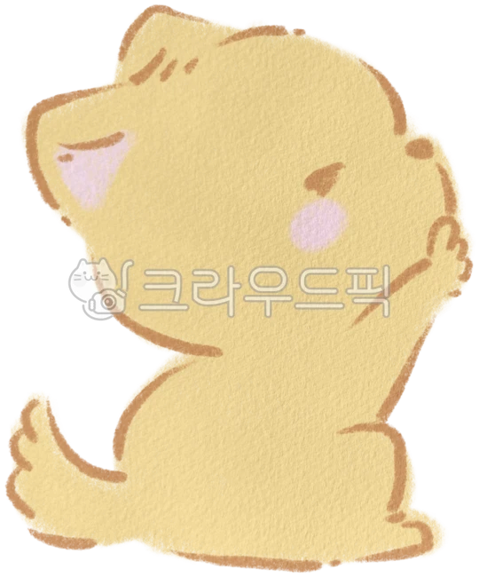

아기 고양이 측면 · 레퍼런스 제안
레퍼런스의 짧은 앞볼·턱과 둥근 뒤통수 흐름을 참고한 3D 후보입니다. 별빛냥의 눈과 색상, 작은 서기 체형을 유지했습니다. 정면 투영 윤곽은 유지하지만 곡면 변경에 따른 명암 차이는 있습니다.
윗줄: 현재 둥근 볼형 A / 아랫줄: 레퍼런스 측면 후보
4방향 전후 비교 저장참고한 측면 윤곽

귀·뒤통수·짧은 볼의 연결만 참고. 원본을 대체하지 않는 검수 후보입니다.
확대 비교 저장검수 중…